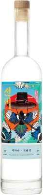
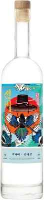

-
선비 보드카
750mL
찹쌀을 이용해 순수한 보드카를 만들기 위해 세번 증류, 네번 여과.
40% ABV -
선비 진
750mL
한국 식재료와 런던 드라이 진 식재료의 조합. 런던 드라이 진 스타일로 증류
48% ABV
-
미션
우리의 목표는 한국적인 요소와 국제적 증류 기술을 결합하여 세계적으로 인정받는 혁신적 증류주를 만드는 것입니다. 세계 무대에서 다른 증류주들과 어깨를 나란히 할 날을 손꼽아 기다립니다. 선비는 토끼소주에서 생산합니다. 그리고 한국 충주에서 증류합니다.
-
선비 진 보태니컬
-
배경 이야기
라벨에는 선비 그림이 있습니다. 선비는 고려 시대와 조선 시대에 학식과 인품을 갖춘 사람을 지칭했으며 부와 명예를 탐하지 않고 올곧은 자세로 학문에 매진하는 정직함을 상징했습니다. 교양과 성품이 진실된 부와 명예라고 믿는 우리의 가치관과 선비의 결은 닮아 있습니다.

 
